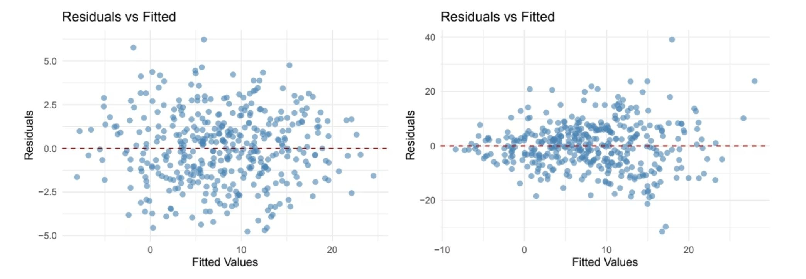
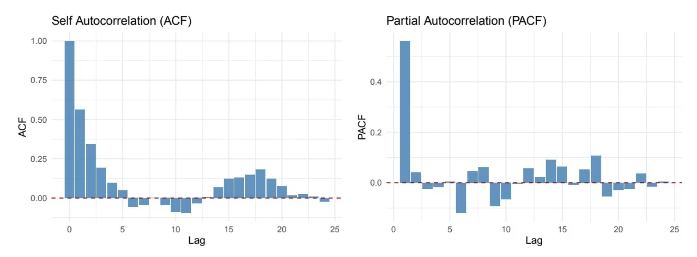
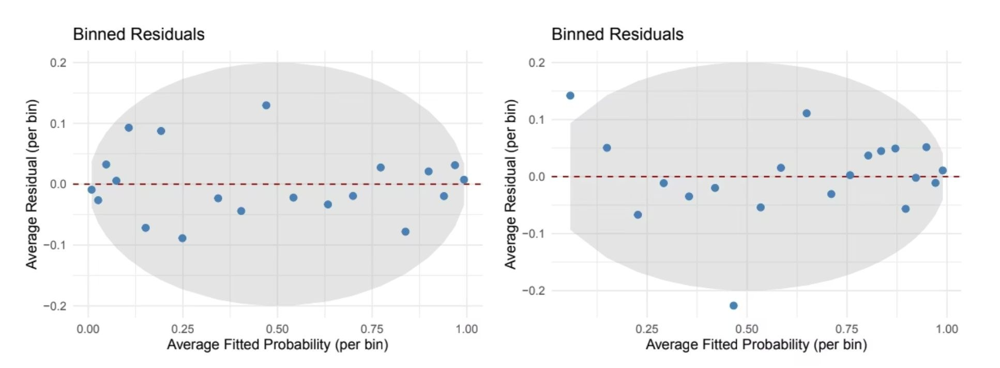
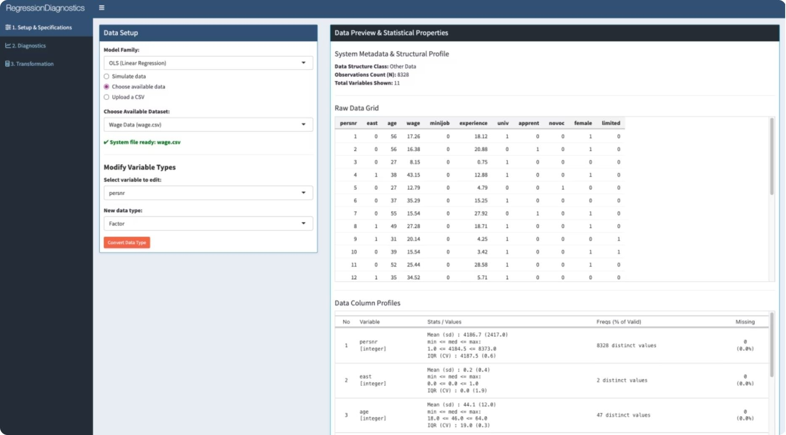
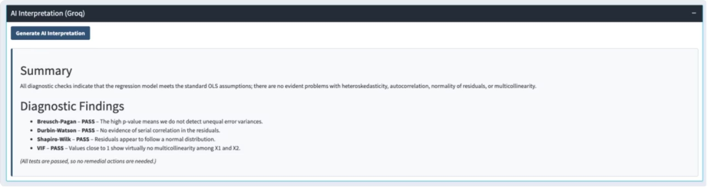
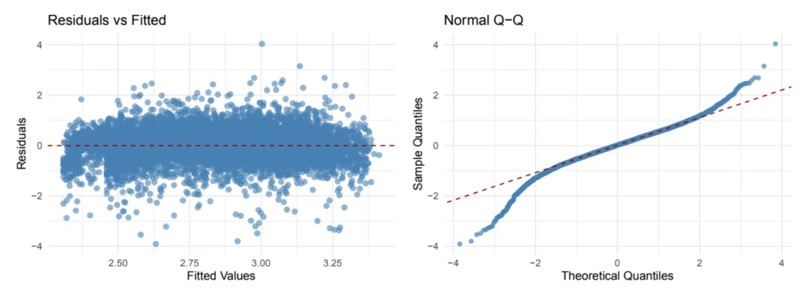
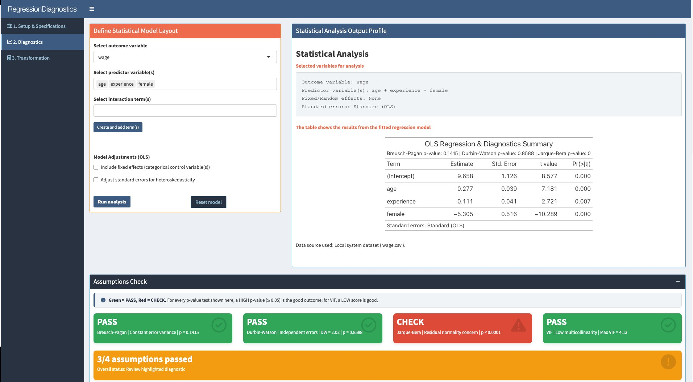
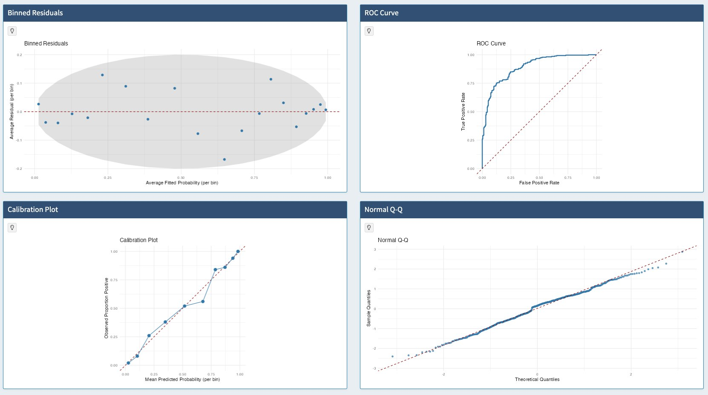
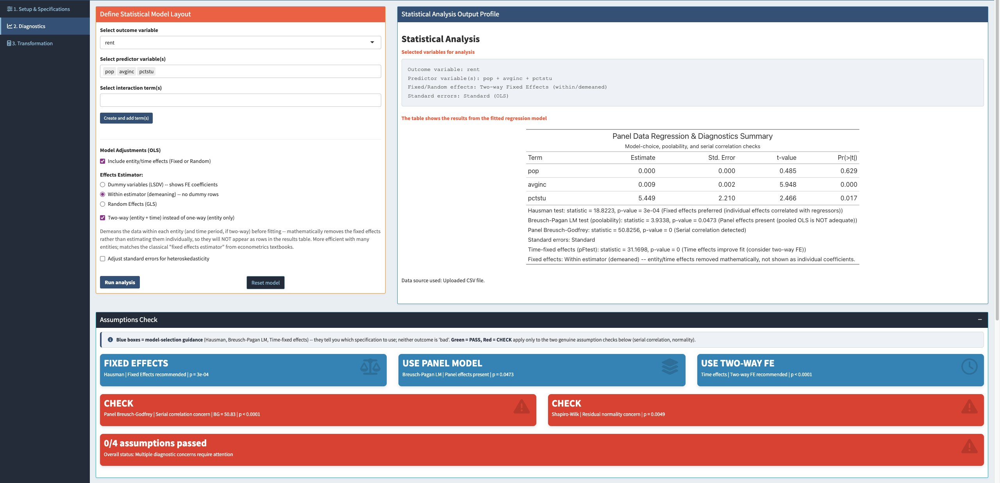

Advanced R for Econometricians · University of Duisburg-Essen
Rezaul Hoque · Sarah Al-Talal · Thi Hong Cam Nguyen
Supervisors: Dr. Martin C. Arnold · M.Sc. Martin Schmelzer · 08.10.2026
Agenda
01
Motivation and our approach
02
Course concepts we applied
03
Model-specific diagnostics
04
Validation with simulated data
05
Live demo and AI interpretation
06
Case study: hourly wages
07
Testing and quality assurance
08
Limitations, future work, conclusion
02 / 20
01 / Motivation
Heteroskedasticity, serial correlation, non-normality and multicollinearity can make standard errors and p-values unreliable.
Linear, logistic, time-series and panel models each need their own set of checks.
Running every test by hand for every model is slow and easy to get wrong.
Our goal: one tool that runs the right checks for each model, in R and in a Shiny app.
03 / 20
01 / Approach
One S3 class, diag_lm, runs the right tests and plots for each model.
lm · glm · plm
Load or simulate data, pick a model, see each test as PASS or CHECK.
3 tabs
Simulate data with a known problem and check that diag_lm finds it.
+ automated tests
An optional LLM explains the computed results in plain language.
opt-in
Problem: checking assumptions by hand for every model is slow and error-prone. Idea: put all checks into one reusable tool.
04 / 20
02 / Course concepts
Each model needs different tests → one class; summary() and plot() adapt to the model.
The same step for many columns, tests and plots → small reusable functions with lapply().
No refit on every change → eventReactive() waits for a button click; req() waits for complete input.
A failing test or messy CSV crashed the app → tryCatch() returns NA; validate() shows a clear message.
Results must read at a glance → every diagnostic plot is a ggplot, every summary a gt table.
p-values are hard for non-experts → ellmer + Groq explain the computed results; no raw data is sent.
Also applied: R Markdown (the report runs our tests) · Git and GitHub (version control)
05 / 20
03 / Diagnostics
Breusch–Pagan
constant variance
Durbin–Watson
autocorrelation
Shapiro–Wilk / JB
normality (JB if n > 5000)
VIF
multicollinearity
Hosmer–Lemeshow
goodness of fit
ROC / AUC
discrimination
Calibration
predicted vs observed
VIF
multicollinearity
ADF
unit roots
BG / Ljung–Box
serial correlation
ACF / PACF
lag structure
Jarque–Bera
normality
Panel LM
pooled vs panel
Hausman
fixed vs random effects
Panel BG
serial correlation
F-test
time effects
06 / 20
04 / Validation
01
Clean data, no violations
02
Break one assumption on purpose
03
Run diag_lm on the simulated data
04
Did diag_lm flag the problem we built in?
Problems we injected
Heteroskedasticity
Multicollinearity
AR(1) serial correlation
Unit root
Correlated panel effects
Omitted non-linearity (logistic)
07 / 20
04 / Results · Linear (n = 400)

Residuals vs fitted: random scatter (baseline, left) vs a funnel (injected, right)
Baseline · Breusch–Pagan
p = 0.486
Injected · Breusch–Pagan
p ≈ 0 · CHECK
Collinear X₂ ≈ X₁ · max VIF
15.68
Note: Shapiro–Wilk also rejects under heteroskedasticity (p = 0.003), because unequal variance makes the tails heavier.
08 / 20
04 / Results · Time series (φ = 0.6, n = 300)

ACF decays slowly, PACF cuts off after lag 1: the signature of an AR(1) process
Breusch–Godfrey
p ≈ 0
Ljung–Box
p ≈ 0
ADF · AR(1) φ = 0.5 vs random walk
0.010 vs 0.073
Both tests reject “no serial correlation”. ADF rejects the unit root for the stationary series but not for the random walk.
09 / 20
04 / Results · Logistic (n = 500)

Binned residuals: random (baseline, left) vs curved (omitted X₁², right)
Hosmer–Lemeshow p
0.90 → 0.18
falls, but not significant at 5%
Baseline AUC
0.894
Collinear · max VIF
18.60
This is why diag_lm reports every test together with its diagnostic plot.
10 / 20
04 / Results · Panel (30 entities × 8 periods)
Effects correlated with X
FE
Hausman p = 0.0001 → fixed effects
Panel LM p < 0.001 → panel model, not pooled OLS
Effects independent of X
RE
Hausman p = 0.138 → random effects
Panel LM p < 0.001 → panel model, not pooled OLS
Correct choice in both scenarios. In the app these show as blue model-selection boxes, not PASS / CHECK.
11 / 20
05 / Application

1 · Setup
Example data, simulated data or your own CSV
2 · Diagnostics
Fit the model, see PASS / CHECK boxes and plots
3 · Transformation
Log, square or standardise a variable and refit
12 / 20
05 / Live demonstration
13 / 20
05 / AI layer

01 · Compute
diag_lm runs every test in R
02 · Summarise
Only test results and coefficients, no raw data
03 · Interpret
Groq LLM via ellmer explains and suggests next steps
Opt-in · the AI computes no test · the app works without an API key
14 / 20
06 / log(wage) ~ experience + age + female · N = 8,328
+0.95%
per year of experience
+1.09%
per year of age
−14.05%
gap for women

CHECK
Breusch–Pagan
CHECK
Jarque–Bera (n > 5000)
PASS
Durbin–Watson
PASS
VIF = 4.13
Expected signs, but heteroskedasticity and non-normal residuals remain.
15 / 20
06 / Model refinement
1
log(wage) on experience, age and female
2
Breusch–Pagan and Jarque–Bera both CHECK
3
Log of experience and age: still CHECK
4
Add experience² and report robust SEs
experience
+0.0530
experience²
−0.0010
Wages rise with experience, but more slowly over time: a concave earnings profile, as human capital theory predicts.
BP and JB still CHECK after re-specification → report robust standard errors.
16 / 20
07 / Quality
3
One each for diag_lm, the LLM layer and the Shiny app
9
shiny::testServer() simulates a user clicking through the app
8
Found in a QA audit, e.g. a crash when switching model family
Tests run every time the report is knitted. If one fails, the build stops.
17 / 20
08 / Discussion
Asymptotic tests · size may drift in small samples
Residual ADF · indicative only (Engle–Granger)
Logistic · cross-section only
Panel · model selection only, no panel plots yet
Panel SEs · HC1 unless a cluster variable is chosen
Time series · no ARIMA / GARCH fitting
Scripts · not yet an R package
R package · roxygen2, R CMD check, vignette
Auto-remediation · refit with robust / HAC SEs or a Firth logit when a test fails
Separation check · formal Albert–Anderson test instead of a heuristic
Extensions · panel plots, multinomial logit, ARIMA / GARCH, IV / 2SLS
18 / 20
08 / Conclusion
4
Linear, logistic, time series and panel, all through one S3 class
6
5 flagged by a formal test; the logistic non-linearity shows in the plot
9
Plus unit tests on every report build; 8 bugs found and fixed
Next step: turn diag_lm into a proper R package (roxygen2, R CMD check, vignette).
19 / 20
Rezaul Hoque · Sarah Al-Talal · Thi Hong Cam Nguyen
Backup · Demo fallback 1 / 2

Wage data: one value box per test. Green PASS, red CHECK, plus an overall status.

Logistic model: binned residuals, ROC curve and calibration plot replace the OLS plots.
B1 / B6
Backup · Demo fallback 2 / 2

Rental panel, two-way FE: blue boxes recommend a model (Hausman, LM, time effects); red boxes are assumption checks.
AI panel: a plain-language summary of the computed tests, generated only after a click.
B2 / B6
Backup · Decision rules
| Test | Null hypothesis | Result in diag_lm |
|---|---|---|
| Breusch–Pagan | constant error variance | p < 0.05 → CHECK |
| Durbin–Watson | no first-order autocorrelation | p < 0.05 → CHECK |
| Shapiro–Wilk / JB | normal residuals (JB if n > 5000) | p < 0.05 → CHECK |
| VIF | (no test, a score) | < 5 PASS · 5–10 CAUTION · ≥ 10 CHECK |
| Hosmer–Lemeshow | model fits across 10 risk groups | p < 0.05 → CHECK |
| AUC | (no test, a score) | ≥ 0.8 good · 0.7–0.8 caution · < 0.7 weak |
| ADF | unit root (non-stationary) | p ≥ 0.05 → non-stationary |
| Panel LM | no panel effect | p < 0.05 → use a panel model |
| Hausman | random effects is consistent | p < 0.05 → fixed effects |
| pFtest | no time effects | p < 0.05 → two-way FE |
| Panel BG | no serial correlation | p < 0.05 → CHECK |
B3 / B6
Backup · Q&A
Correlation between neighbouring residuals, so the result depends on the order of the rows.
In cross-section data the row order is often arbitrary. Then the DW result carries no information.
diag_lm adds Breusch–Godfrey (higher-order lags) and Ljung–Box.
Short answer: we report it as a standard OLS check. It is only meaningful when the rows have a natural order, for example sorted by time or region.
B4 / B6
Backup · Q&A · known limitation
1
Report, Table 5: panel BG gives p ≤ 0.0001 in both scenarios, although we simulated no serial correlation.
2
The test runs on the within (FE) residuals. Demeaning each entity creates a correlation of about −1/(T−1) between them.
3
With 240 observations, the test picks up this built-in correlation.
T = 8 periods
−1/7 ≈ −0.14
Fix
Use Wooldridge's test for FE models, plm::pwartest(), which allows for the demeaning.
B5 / B6
Backup · Code
fit <- lm(Y ~ X1 + X2, data = sim)
d <- new_diag_lm(fit, data_type = "cs")
class(d) # "diag_lm"
summary(d) # gt table, layout follows data_type
plot(d, type = "qq") # ggplot object
plot(d, type = "roc") # error: logistic-only plot
Constructor
checks the input: lm, plm or binomial glm
Methods
summary() and plot() dispatch on the class
Safety
tryCatch(): a failed test returns NA
B6 / B6